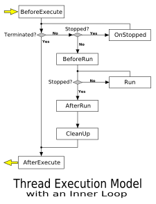

Topic Path: Symbol Reference > Classes > TIdThread Class
Ancestor for threads used in the Indy library.
term or function-specific client connections to a multi-threaded TCP server.
The following diagram represents the general sequence of events during execution of the Thread without an inner loop.

Using the Loop property in the proper manner allows the code written for the TIdTCPServer.OnExecute event handler procedure to be written in a more straight-forward manner.
An exception handling mechanism is provided that allows handling runtime exceptions occurring when the Run method is called. An unhandled exception raised during execution of the thread will cause TerminatingException to be assigned with the content from the exception. The exception is re-raised and causes termination of the thread.
TIdThread also implements a CleanUp method that manages the Data property in the thread instance based on settings in the Options property.
TIdThread includes a Yarn property that provides support for some of the advanced features available for servers in the Indy 10 library.
TIdTCPServer introduces an abstract representation for executable tasks for client connections to a multi-threaded TCP server. This abstraction, called a Yarn, allows the use either threads or fibers for execution of client connections to the server. Each client connection, or Yarn, represents a task that is managed by the Scheduler for the server.
There are basically two types of Schedulers available for TIdTCPServer: Thread-based and Fiber-based. Each is designed to work with a specific type of executable task (or Yarn) that represents the client connections.
TIdScheduler specifies (and in some cases - implements) methods that handle creation, execution, and termination of tasks for client connections. Applications must use an instance of a descendant class (like TIdSchedulerOfThreadDefault, TIdSchedulerOfThreadPool, or TIdSchedulerOfFiber) that implements the mechanism for managing the TIdYarn for the executable task.
The Yarn property in TIdThread is provided to store a reference to the mechanism used in scheduling the thread. TIdThread frees the reference in Yarn in its protected Execute method following a call to AfterRun in the thread execution model.
TIdThread descendants should override the abstract Run and HandleRunException methods, and implement the virtual methods BeforeExecute, BeforeRun, AfterRun and AfterExecute.
Do not access properties and methods of objects shared among threads directly in the Run method of a thread. Use the Synchronize method to call a procedure that can access objects and resources which are not thread-safe.
TIdThread = class(TIdNativeThread);
TIdThread is a descendant of the Delphi TThread class, and the ancestor of thread classes used in Indy. Create a descendant of TIdThread to represent a thread of execution in a multi-threaded application.
TIdThread extends the functionality of TThread to include flexible methods for monitoring and control of thread state, as well as notification of changes to thread state. Reading or writing a property value in TIdThread uses an internal TIdCriticalSection instance to ensure that the operation is thread-safe.
TIdThread overrides and/or implements properties, methods, and events that provide facilities not found in the basic TThread, including:
TIdThread includes many properties and methods that represent the thread execution model implemented for the Indy library. The thread execution model is implemented largely using protected methods and the public properties of the thread descendant. The protected methods (which are also declared as virtual for descendant classes) provide fine-grained control during execution of the thread.
TIdThread implements a protected Execute method that coordinates execution of the thread using the facilities provided in the Indy framework. The implementation of Execute calls methods in TIdThread that can be used to control the configuration and behavior of the executing thread, including:
|
BeforeExecute |
|
BeforeRun |
|
Run |
|
AfterRun |
|
CleanUp |
|
AfterExecute |
The Execute method allows the Run method to be called inside a loop when the Loop property contains True. This is the default behavior for TIdThread, but can be specified using a parameter value passed to the constructor for the thread instance. This mechanism is consistent with threads created for long-running or conversational client connections to a multi-threaded TCP server.
The following diagram represents the general sequence of events during execution of the Thread with an inner loop.

When Loop contains False, the Run method is called only once for the executing thread. This mechanism is consistent with threads created for
TIdTCPServer.Scheduler
TIdTCPServer.Contexts
|
Copyright © 1993-2006, Chad Z. Hower (aka Kudzu) and the Indy Pit Crew. All rights reserved.
|
|
Post feedback to the Indy Docs Newsgroup.
|


 Hierarchy
Hierarchy